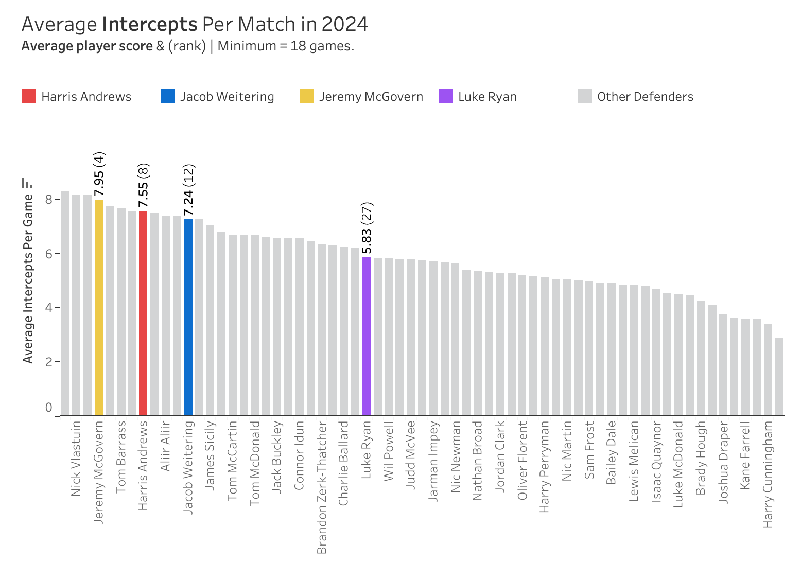
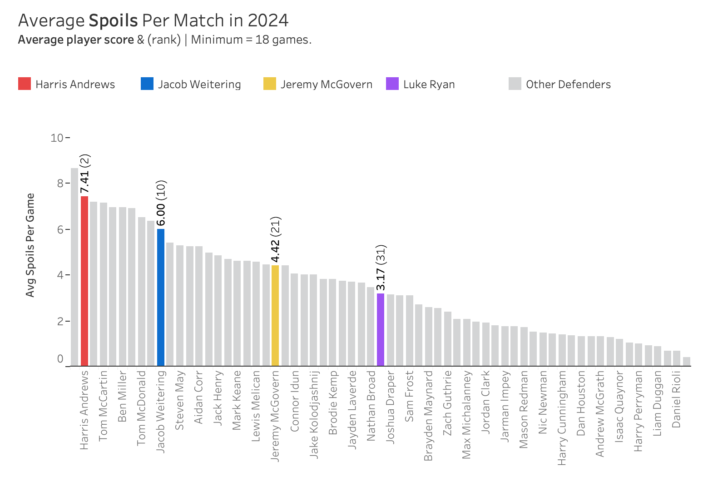
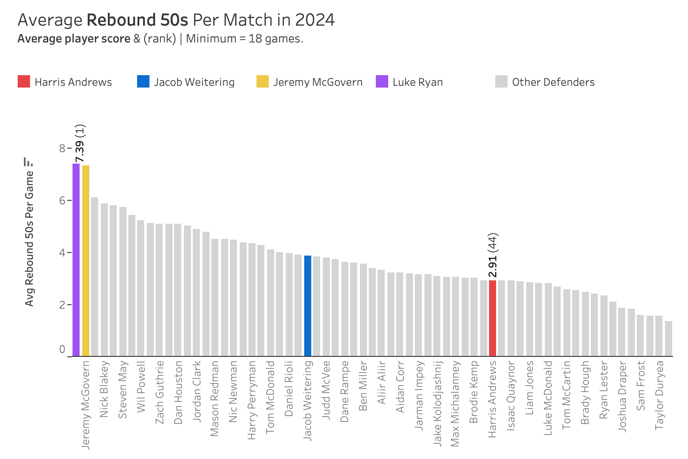

As a die-hard Brisbane Lions supporter and an extreme data enthusiast, I understand that ingrained bias can distort perspectives, but data often provides comfort and clarity.
However, anyone who watched the Brisbane Lions’ 2024 matches could not ignore that the team’s performance would have been far worse without the heroics of key defender and co-captain Harris Andrews.
Therefore, it was shocking when the AFL left him out of the All-Australian team announced on August 29. Many considered him an absolute lock for the team.
Instead, the key defensive positions went to Jeremy McGovern from the West Coast Eagles, Jacob Weitering from the Carlton Blues, and Luke Ryan from the Fremantle Dockers.
All great players, no doubt, but were they better than Harris Andrews this year?
Driven by frustration, I turned to uncovering the cold, hard facts, determined to prove that the selectors made a huge mistake by excluding the Lions’ defensive talisman from the team for the second consecutive year.
I sought to understand whether Harris Andrews was truly robbed of an All-Australian jersey, as many, especially Lions fans, claimed. After analysing the key statistical categories for a key defender, I am confident that Harris was indeed unfairly overlooked.
But let’s see how Andrews’ season compares to his defensive peers by the numbers.
Approach
To understand, I went straight to the 2024 season data and pulled key metrics that underpin the role of a key defender in Australian Rules Football.
These metrics include:
- Intercepts
- Contested Marks
- Spoils
- Rebound 50s
- One percenters
These data were pulled via the fitzRoy API, which taps into a wide range of AFL data sources including Footywire.
But why these categories?
Primarily because many sites that track player characteristics (for example, Stats Insiders) use similar categories to define a key defender. There might be some debate about whether these are the right ones, but I’ve settled on these for the time being.
Since many AFL players occasionally take on defensive roles (e.g., Nick Daicos playing off half-back early in 2024), I filtered the data to include only those who played defensive positions for at least 80% of the season.
In most cases, I highlighted the main players in this analysis: Andrews, McGovern, Weitering, and Ryan.
Intercepts
Intercepts involve gaining possession of the ball by cutting off an opposition pass, kick, or handball during play. The chart below ranks all relevant AFL players by their average intercepts per game throughout the season (minimum 18 games as a defender).

It’s clear that McGovern leads this group with nearly 8 intercepts per game, ranking 4th in the AFL. Andrews follows closely, averaging just over 7.5 per game and ranking 8th. Neither Weitering nor Ryan made the top ten, with Ryan ranking 27th with 5.83 intercepts per game. For reference, Sam Collins holds the top spot, averaging 8 intercepts per game.
Contested Marks
Contested marks, or marking the ball in a contested situation, is another crucial attribute of top key defenders. As shown in the chart below, Harris Andrews clearly led the league in this skill in 2024.
Andrews averaged over 2 contested marks per game, making him the top defender in the AFL for this statistic, with a 0.5 mark per game lead over second place, Tom Barrass. Both McGovern and Weitering also performed well, ranking 4th and 5th, respectively. However, Ryan lagged behind, averaging only 0.4 contested marks per game, ranking 36th.
Spoils
Preventing the opposition from marking the ball, typically through punching or knocking it away, known as spoiling, is a crucial skill for top AFL teams, often executed by key defenders. Harris Andrews excelled in this area during the 2024 season.

Andrews ranked 2nd behind Darcy Moore, averaging an impressive 7.4 spoils per match. In this category, the group is more spread out, with Weitering ranking in the top 10, while McGovern and Ryan performed comparatively worse.
Rebound 50s
Rebound 50s involves moving the ball from the defensive 50 zone into the midfield and beyond, and this is one area where Harris Andrews falls short compared to his All-Australian peers.

Conversely, Luke Ryan excels in this category, leading the group with nearly 7.4 rebound 50s per game. McGovern closely follows with 7.32 per game. Andrews, and to a lesser extent Weitering, perform poorly in this area, with Andrews averaging just under 3 per game, ranking 44th.
One Percenters
One percenters capture all other defensive actions in an AFL match that are challenging to track individually, such as shepherds, smothers, and blocks. These actions are crucial to key defending and are often used to gauge a defender’s performance.
In 2024, Andrews once again proved to be among the best, ranking 3rd overall with nearly 8.1 per game. Weitering also made the top 10 with 6.71 per game. McGovern and Ryan were more middle of the pack, ranking 20th and 31st, respectively.
Overall Rank
By now, you probably see where this analysis is heading.
But for clarity’s sake, here’s a highlight table showing the rank positions of our chosen key defenders in the metrics that really matter for their role.
As you can see, Jeremy McGovern and Harris Andrews average out at 2nd and 3rd, respectively. Interestingly, McGovern’s teammate Tom Barrass takes the top spot! Barrass fans might argue he’s been hard done by as well (congrats to the Hawks on what looks like a stellar signing on paper).
There’s probably a whole other blog needed to explain why two Eagles players rank 1st and 2nd in key defender stats despite their team’s overall defensive struggles—but we’ll save that for another day.
Anyway, while the evidence shows that Weitering probably earned his blazer, ranking 5th overall in these metrics, the data suggests that Luke Ryan is statistically a much weaker player in the key defender role. He might count himself incredibly lucky to have snagged that All-Australian spot, especially with Andrews outperforming him in most key metrics.
Sorry, Freo fans—nothing personal against Luke Ryan, but the stats (mostly) don’t lie.
If you made it this far, thanks for reading. You’re welcome to send me your thoughts if you wish (hopefully not abuse!).
And if you have any angles you’d think worthwhile exploring on this data, suggest it, and I’ll see if I can dig into it, if time permits.